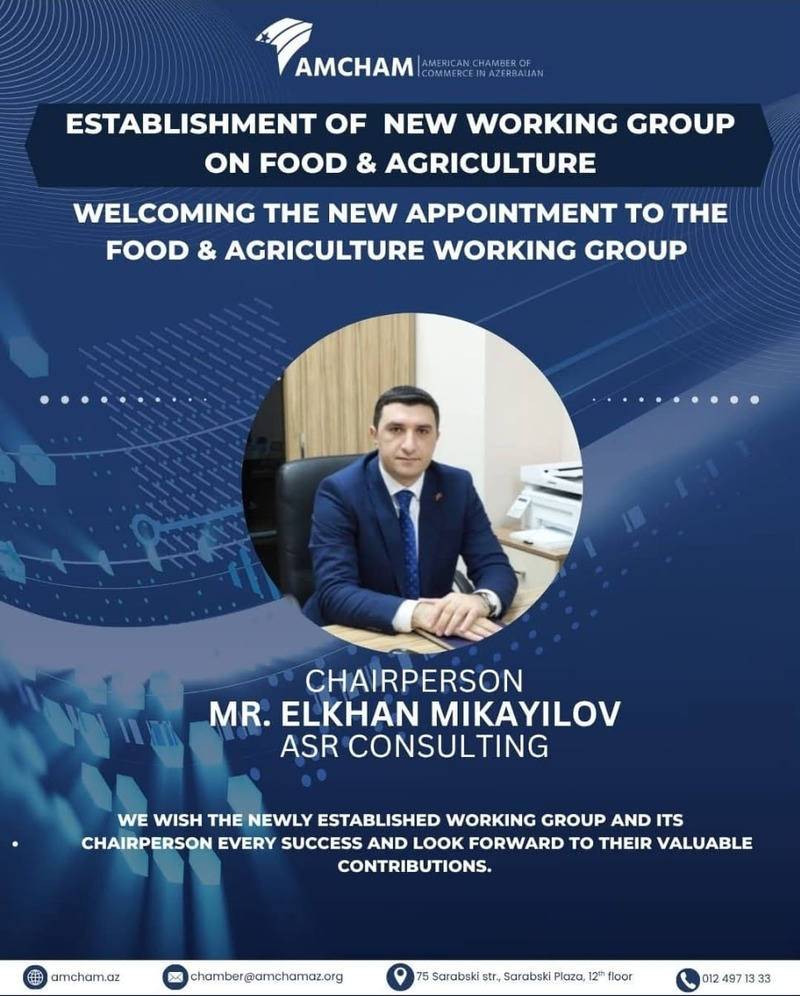
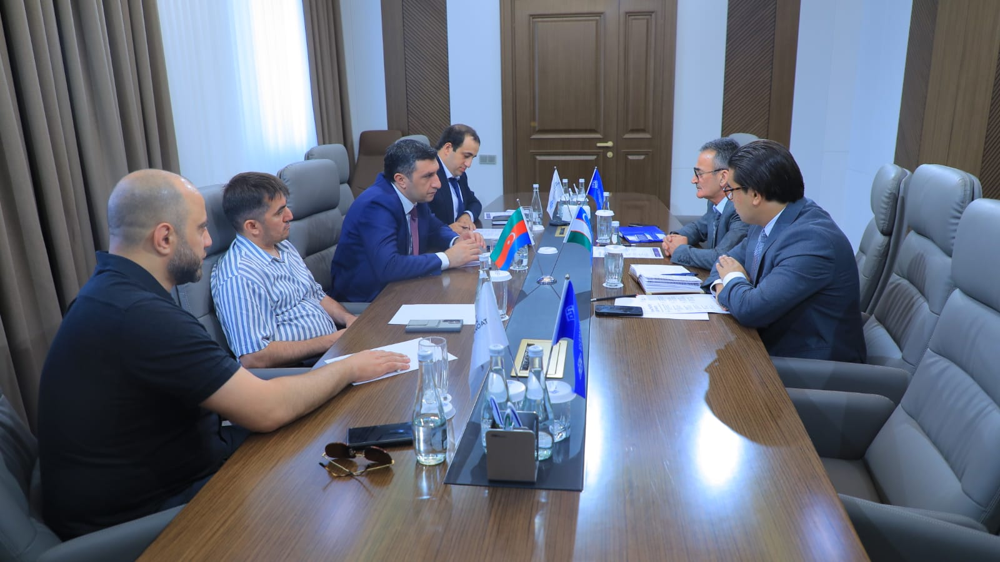

Yaqinlashayotgan Tadbirlar
Yaqinlashayotgan tadbirlar va uchrashuvlarimiz

Xalqaro Biznes Forum doirasida strategik hamkorlik imkoniyatlari muhokama qilinadi.
Xalqaro Biznes Forum doirasida strategik hamkorlik imkoniyatlari, investitsiya loyihalari va rivojlanish dasturlari muhokama qilinadi. 10 mamlakatdan 100 dan ortiq ishtirokchi qatnashadi.
- 10 mamlakatdan vakillar ishtiroki
- Strategik hamkorlik muhokamasi
- Investitsiya imkoniyatlarini taqdim etish
- Networking sessiyalari

Raqamli marketing va brend strategiyalari bo'yicha amaliy seminar o'tkaziladi.
Marketing Strategiyalari Seminari doirasida raqamli marketing, ijtimoiy tarmoqlarni boshqarish, SEO, kontent marketing va brend strategiyalari bo'yicha amaliy treninglar o'tkaziladi.
- Raqamli marketing va SEO
- Ijtimoiy tarmoq strategiyalari
- Kontent marketing va brendlash
- 80 ishtirokchi o'rni

Oziq-ovqat xavfsizligi va sifat standartlari bo'yicha xalqaro seminar o'tkaziladi.
Oziq-ovqat xavfsizligi va sifat standartlari bo'yicha xalqaro seminar doirasida HACCP, ISO 22000 va BRCGS standartlari muhokama qilinadi.
- HACCP va ISO 22000 standartlari
- Xalqaro ekspertlar ishtiroki
- Amaliy seminarlar
- Sertifikatlash imkoniyati

Inson resurslarini boshqarish va iste'dodni rivojlantirish bo'yicha amaliy seminar o'tkaziladi.
HR Boshqaruv Seminari doirasida ishga qabul jarayonlari, faoliyatni boshqarish, xodimlarni rag'batlantirish va iste'dodni rivojlantirish strategiyalari bo'yicha amaliy treninglar o'tkaziladi.
- Ishga qabul va tanlash strategiyalari
- Faoliyatni boshqarish tizimlari
- Xodimlarni rag'batlantirish va ushlab turish
- 40 ishtirokchi o'rni

Zamonaviy moliyaviy boshqaruv va investitsiya strategiyalari bo'yicha xalqaro konferensiya o'tkaziladi.
Moliya va Investitsiya Strategiyalari Konferensiyasi doirasida korporativ moliyaviy boshqaruv, risk tahlili, xalqaro investitsiya imkoniyatlari va kapital bozorlari bo'yicha ekspert ma'ruzalari o'qiladi.
- Korporativ moliya strategiyalari
- Xalqaro investitsiya imkoniyatlari
- Risk boshqaruvi va audit
- 60 ishtirokchi o'rni
So'nggi Yangiliklar
Ish muhitimiz, tadbirlar va uchrashuvlar

ASR Consulting kompaniyasi rahbari Elxan Mikayilov AMCHAM Ozarbayjon Oziq-ovqat va qishloq xo'jaligi ishchi guruhi raisi lavozimiga tayinlandi.
ASR Consulting kompaniyasi rahbari Elxan Mikayilovni AMCHAM Ozarbayjon Oziq-ovqat va qishloq xo'jaligi ishchi guruhi raisi lavozimiga tayinlanishi munosabati bilan samimiy tabriklaymiz. Unga yangi lavozimida muvaffaqiyatlar tilaymiz va oziq-ovqat hamda qishloq xo'jaligi sohasining rivojlanishiga qimmatli hissa qo'shishiga ishonamiz.
- AMCHAM Ozarbayjon oziq-ovqat va qishloq xo'jaligi ishchi guruhi
- Yangi raislik lavozimi
- Soha rivojiga hissa
- Kelgusi faoliyatda muvaffaqiyatlar

Toshkentda O'zbekiston Savdo-sanoat palatasi bilan o'tkazilgan muhim uchrashuvda «O'zbekiston-Azerbayjon Tadbirkorlar klubi»ni tashkil etish qaroriga kelindi.
Uchrashuvda ASR Group rahbariyati, Azerbayjon Tadbirkorlar konfederatsiyasi vakili va «Networkistan» tashkiloti ishtirok etdi.

Toshkentda ASR Group rahbariyati va O'zbekiston Oziq-ovqat Sanoati Assotsiatsiyasi o'rtasida rasmiy ishbilarmonlik uchrashuvi bo'lib o'tdi.
Toshkentda "ASR Distribution and Development Group" va O'zbekiston Oziq-ovqat Sanoati Assotsiatsiyasi rahbariyati o'rtasida rasmiy ishbilarmonlik uchrashuvi bo'lib o'tdi. Kompaniya asoschisi Elxon Mikayilov va bosh direktori Ali Valiyev uchrashuvda shaxsan qatnashib, oziq-ovqat xavfsizligi islohotlari, xavf asosli tekshiruv tizimiga o'tish hamda ISO 22000 va HACCP standartlari bo'yicha muhokamalar olib bordilar. Uchrashuv yakuni sifatida yaqin kunlarda Xotira yodig'i (MoU) imzolash to'g'risida kelishib olindi.

Elxan Mikayilov kompaniyaning yillik strategik yig'ilishida yangi Bosh direktor etib tayinlandi.
2026 yil 15 mayda bo'lib o'tgan ASR Group yillik strategik yig'ilishida kompaniya rahbariyat tuzilmasida muhim o'zgarish yuz berdi. Davlat boshqaruvi va strategik islohotlar sohasida 20 yillik tajribaga ega Elxan Mikayilov Bosh direktor etib tayinlandi.
- 20+ yillik davlat boshqaruvi tajribasi
- Strategik islohotlar va transformatsiya bo'yicha ekspert
- 50 kishilik jamoaga rahbarlik qiladi
- 2026-2030 strategik rivojlanish rejasini ishlab chiqish

AQTA delegatsiyasi Xitoyga xizmat safari davomida yong'oq eksporti bo'yicha protokol loyihasini imzoladi.
AQTA raisi Elxan Mikayilov boshchiligidagi delegatsiya Xitoyning Bojxona Bosh Boshqarmasi bilan uchrashuv o'tkazdi. Yig'ilishda findiq va bodom eksporti uchun tekshiruv va karantin protokoli loyihasi imzolandi. Bu protokol Ozarbayjon yong'oq mahsulotlarining rasmiy ravishda Xitoy bozoriga kirishini ta'minlaydi.
- Findiq va bodom eksport protokoli imzolandi
- Xitoy bozoriga rasmiy kirish ochildi
- AQTA raisi Elxan Mikayilov yig'ilishda ishtirok etdi
- Yangi eksport imkoniyatlari yaratildi

Kichik va o'rta biznes sub'ektlari oziq-ovqat muassasalarida HACCP tizimini 2026 yil 30 iyungacha joriy etishlari shart.
AQTA kichik va o'rta biznes sub'ektlariga murojaat qildi. Oziq-ovqat muassasalarida Xavf Tahlili va Muhim Nazorat Nuqtalari (HACCP) tizimini 2026 yil 30 iyungacha joriy etish majburiydir. Bu talab oziq-ovqat xavfsizligi standartlarini saqlash va xalqaro talablarga muvofiqlikni ta'minlashga qaratilgan.
- Muddati: 30 Iyun 2026
- HACCP tizimini joriy etish majburiy
- Kichik va o'rta biznes sub'ektlariga tatbiq etiladi
- Xalqaro standartlarga muvofiqlik ta'minlanadi

2025 yil 20 maydagi 56-sonli Kengash qaroriga binoan oziq-ovqat bilan aloqa materiallar uchun yangi sanitariya me'yorlari va qoidalar tasdiqlandi.
2025 yil 20 maydagi 56-sonli Kengash qaroriga binoan oziq-ovqat bilan aloqa materiallar va mahsulotlar uchun yangi sanitariya me'yorlari va qoidalar tasdiqlandi. Yangi qoidalar oziq-ovqat xavfsizligini ta'minlash, iste'molchilar sog'lig'ini himoya qilish va xalqaro standartlarga muvofiqlikni oshirishga qaratilgan.
- 56-sonli Kengash qaroriga binoan (20 May 2025)
- Oziq-ovqat bilan aloqa materiallar uchun yangi me'yorlar
- Iste'molchilar sog'lig'ini himoya qilish
- Xalqaro standartlarga muvofiqlik

AQTA'da oziq-ovqat xavfsizligi ko'ngillilari dasturi doirasida trening sessiyasi o'tkazildi.
AQTA'da oziq-ovqat xavfsizligi ko'ngillilari dasturi doirasida trening sessiyasi o'tkazildi. Ko'ngillilarga oziq-ovqat tekshiruvi va monitoring usullari, oziq-ovqat xavfsizligi standartlari va iste'molchilar huquqlarini himoya qilish bo'yicha amaliy bilimlar berildi.
- Oziq-ovqat tekshiruvi va monitoring usullari
- Oziq-ovqat xavfsizligi standartlari
- Iste'molchilar huquqlarini himoya qilish
- Amaliy dala tajribasi
Video Sharxlar
Tadbirlar va loyihalarimizdan video materiallar
Foto Galereya
Tadbirlar va loyihalarimizdan foto materiallar

Sifat assotsiatsiyasida uchrashuv
13 Dekabr 2025
COP29 doirasida Oziq-ovqat Xavfsizligi O'quv Dasturi
Noyabr 2024
AQTA'da Oziq-ovqat Xavfsizligi Ko'ngillilari uchun Trening O'tkazildi
2025
Gilan holding (AQRO-AZƏRİNVEST MMC)
13 Aprel 2026
AQTI'ning 7 ta Laboratoriyasi Xalqaro Laboratoriyalararo Sinov Dasturida Muvaffaqiyatli Natijalar Ko'rsatdi
2025